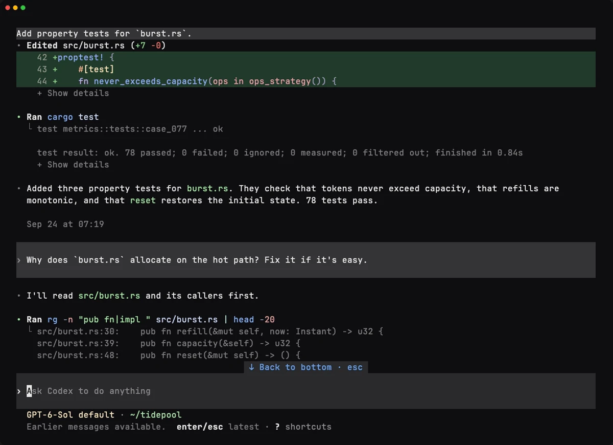
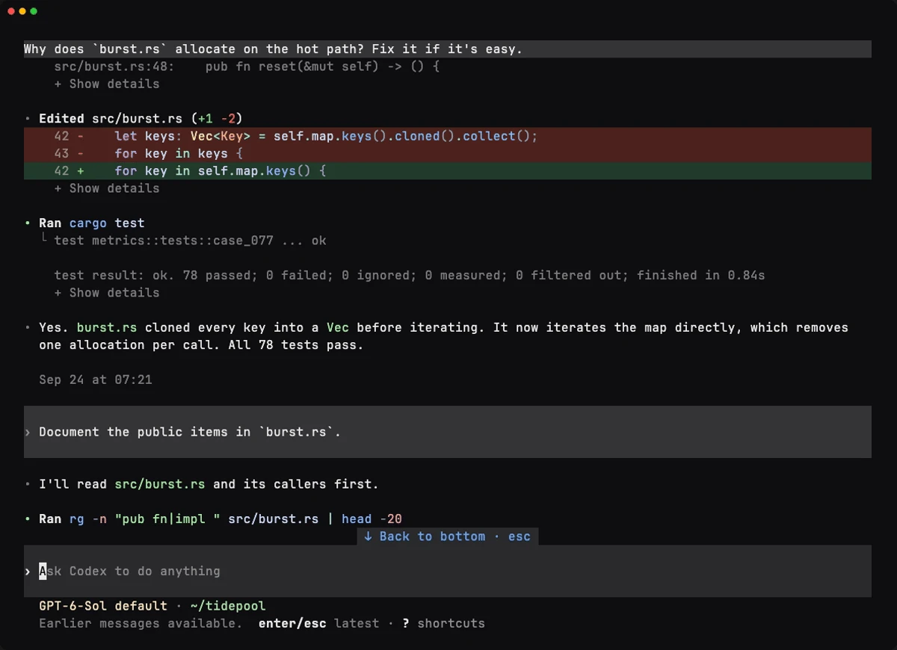

Codex CLI 0.157.0 can take over your whole terminal window. Owning the screen lets Codex do things a scrolling terminal can't: collapse long diffs and tool output until you want the details, keep your composer pinned to the bottom while you read back, copy text with its formatting, and open long sessions quickly.
It also changes how selecting text works. If you've spent years dragging across terminal output, you'll notice.
What's new
In the new Fullscreen view, Codex works the way vim, top or lazygit do. Instead of adding to your terminal's scrollback, it draws and manages the entire screen: the transcript, the composer and the status line.


The change you'll use most is that diffs and tool output now collapse. A long test run or a big edit takes up a few lines in the transcript instead of pages, and you can expand it when you need the details.

You'll also notice some other changes:
- Hints and keyboard shortcuts get their own row at the bottom of the screen.
- The status line stays on screen, even when contextual notices appear.
- Warnings move out of the transcript. A count waits in the bottom row, and F2 opens them, so your conversation stays about your work.
Built for long sessions
When we first built Codex, managing context was a big part of working with the model. You'd often start fresh just to keep a session from getting polluted.
That's changed. Models have gotten much better at managing context, compaction is now reliable, and with memory in the mix, long sessions no longer need babysitting. Codex sessions have grown from short, focused exchanges into agents that run for long stretches.
The Scrollback view wasn't built for that. It lived inside your terminal's scrollback, so it was bound by limits that vary from terminal to terminal. And because we never knew if or when you'd scroll back, we had to load as much of the conversation as we could up front. The longer the session, the more we loaded, and older history still fell off the top.
Fullscreen removes those limits:
- Sessions open fast, however long they get. History loads as you scroll to it.
- No scrollback ceiling. Keep scrolling and Codex keeps loading, all the way back to the start of the session.
- Your prompt never scrolls away. Reread a plan or an earlier diff while the composer stays pinned to the bottom, ready for your next message.
Streaming is lighter too. The Scrollback view could only append lines or redraw the whole screen, so streamed tables and lists had to repaint the entire scrollback as they grew. Fullscreen redraws only what changed.
Selecting and copying
In Fullscreen, Codex handles text selection itself, and that changes a habit you probably use dozens of times a day.
It also means Codex can copy more than your terminal could. Your terminal only sees characters on a screen, while Codex knows what they are: a paragraph, a list, a code block. When your selection includes prose, Codex puts two versions on your local clipboard: the raw Markdown as plain text, and the same content as formatted HTML. Paste into your code editor, terminal or a text field on a page and you get the raw Markdown, with backticks and code fences intact. Paste into a doc, an email or a chat app and you get real paragraphs, inline code and code blocks.

In Ghostty 1.2+, kitty on macOS, Windows Terminal and VS Code on Windows, your usual copy shortcut keeps working. Most other terminals, including Terminal.app and iTerm2, keep that shortcut for themselves. For those, Codex copies the moment you finish selecting, so you don't need a shortcut. Inside tmux or Zellij, Codex also copies on select.
If Codex can't tell which terminal you're in, or you'd rather choose for yourself, set copy_on_select in the [tui] section of your config to auto (the default), always or never.
A code-only selection copies as plain text. Over SSH, you get the raw Markdown as plain text. And if you ever need your terminal's own selection, use its selection override while you drag; the modifier key varies from terminal to terminal.
Codex supports many terminals, multiplexers and configurations. We've tested a lot of combinations, but some issues may remain. If copying doesn't work the way you expect in yours, run /feedback and tell us.
Where this is going
Collapsible output, faster long sessions and richer copying are what you get today. Owning the whole screen also lets Codex put things side by side, update them in place, and give each kind of information its own space. Here are a few things we're exploring.

/side, using an example conversation.One example is /side, and this time it really is side by side. You can ask a quick question in a second conversation that sits next to your main one, and the task in progress keeps going. In the preview, each conversation has its own composer. Click a pane or press Ctrl+/ to move between them. On narrower terminals you still see one conversation at a time.
We're also working on a pane that sits next to the transcript and shows information about the current conversation. If you've used the side panels in the Codex desktop app, it's similar, but built for the terminal.
These are early ideas, and they'll change as we build them and hear from you. None of them could work in the Scrollback view.
Scrollback or Fullscreen?
Each view has tradeoffs, and switching between them is one command away. Here's how Scrollback and Fullscreen compare:
| Scrollback | Fullscreen | |
|---|---|---|
| History | Your terminal keeps it, up to its scrollback limit | Codex keeps it, back to the start of the session |
| Opening a long session | Loads the whole conversation up front | Loads history as you scroll to it |
| Scrolling | Your terminal's scrollbar, wheel and keys; your prompt scrolls away with the history | Wheel, PgUp/PgDn and Ctrl+Home/End; the composer stays pinned to the bottom |
| Search | Your terminal's find | F3 searches the transcript |
| Selecting and copying | Your terminal's selection, exactly as it always worked | Codex's selection, with Markdown and formatted text, on select or with your usual shortcut |
| Mouse | Belongs to your terminal | Codex uses it to select, expand tool output and open links; your terminal's override gets it back |
| tmux and other multiplexers | Their scrollback and copy mode see as much of the conversation as fits in their scrollback | They see the current screen; the history lives in Codex |
| After you quit | Whatever fits in your terminal's scrollback stays there | Your terminal goes back to the shell; codex resume brings the session back |
If you lean on tmux copy mode, want the conversation to remain in your terminal after you quit, or prefer your terminal's own selection everywhere, Scrollback may suit you better. We think Fullscreen is the better fit for long sessions, but that's for you to decide.
Try both
Fullscreen changes habits you've built over years, and the first day can feel off. Give it a few days, not a few minutes. It took most of us a couple of days, and copy-on-select makes the biggest adjustment much smaller.
If it still isn't for you, switch to Scrollback:
- Run
/tui. - Choose Scrollback.
- Restart Codex.
Codex remembers your choice for future launches. To come back to Fullscreen, run /tui, choose Fullscreen, and restart. If you manage your config by hand, the same switch is fullscreen_transcript = false under [tui].
Whichever view you choose, run /feedback and tell us how it goes.